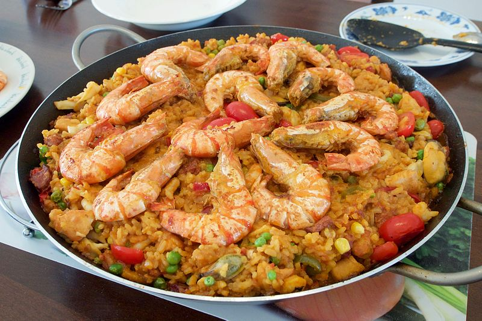

Paella

An easy to make paella using chorizo, chicken, and shrimp.
Paella, in Spanish cuisine, a dish of saffron-flavoured rice cooked with meats, seafood, and vegetables. Originating in the rice-growing areas on Spain’s Mediterranean coast, the dish is especially associated with the region of Valencia. Paella takes its name from the paellera, the utensil in which it is cooked, a flat round pan with two handles; paella is traditionally eaten from the pan.
To prepare paella, pieces of meats such as chicken, pork, or rabbit and seafood such as clams, shrimps, mussels, crayfish, and squid are sauteed in olive oil with onions, garlic, and herbs and removed from the pan. Rice, tomatoes, saffron, and stock are simmered together, the meats and seafood mixed in, and the dish is garnished with peas, pimientos, and other vegetables. Traditional paellas are made out of doors over a wood fire.
Ingredients
- 1 tbsp olive oil
- 1 onion, chopped
- 1 tsp each hot smoked paprika and dried thyme
- 300g paella or risotto rice
- 3 tbsp dry sherry or white wine (optional)
- 400g can chopped tomatoes with garlic
- 900ml chicken stock
- 400g frozen seafood mix
- 1 lemon, ½ juiced, ½ cut into wedges
- handful of flat-leaf parsley, roughly chopped
Instructions
-
Heat the olive oil in a large frying pan or wok. Add the onion and soften for 5 mins.
-
Add the smoked paprika, thyme and paella rice, stir for 1 min, then splash in the sherry, if using. Once evaporated, stir in the chopped tomatoes and chicken stock.
-
Season and cook, uncovered, for about 15 mins, stirring now and again until the rice is almost tender and still surrounded with some liquid.
-
Stir in the seafood mix and cover with a lid. Simmer for 5 mins, or until the seafood is cooked through and the rice is tender. Squeeze over the lemon juice, scatter over the parsley and serve with the lemon wedges.
Return to top
Return to main page